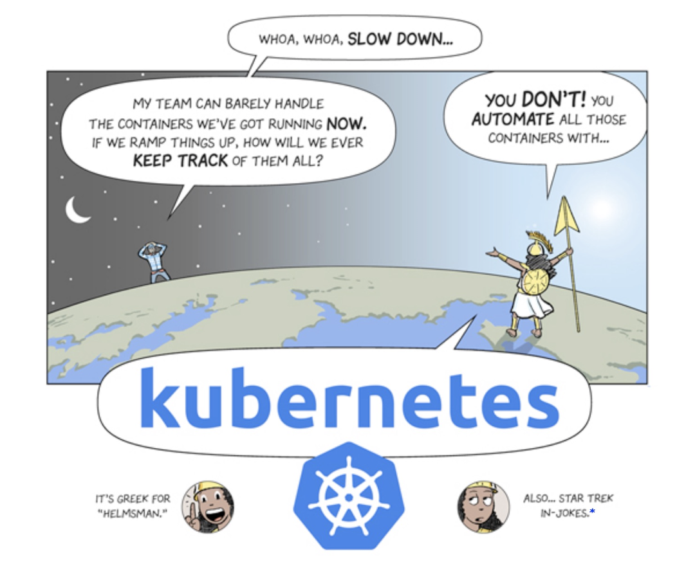
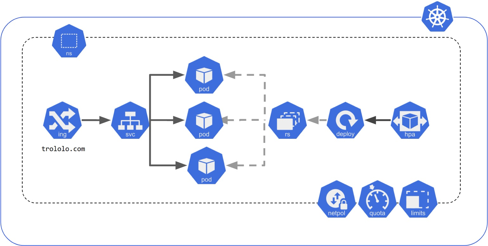
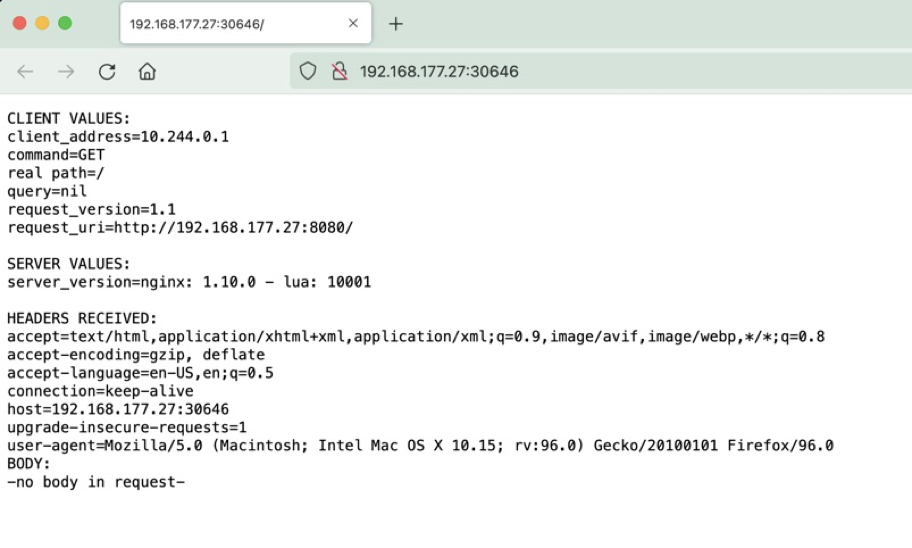

Introduction
Google has created a resource in the form of a comic to understand why Kubernetes and what problems can be addressed by Kubernetes. Here is the link to the same.
https://cloud.google.com/kubernetes-engine/kubernetes-comic And an extract here: 
Lab Setup
In this post, let's explore the world of Kubernetes right from our workstation. All the examples shown here are executed on a machine running macOS.
To get started, we need to install three packages: minikube, hyperkit, and kubectl.
If you already have some kind of virtualization software like Vmware Fusion or Virtualbox, hyperkit is not mandatory, but I prefer to use hyperkit (which seems to be the case with minikube also).
Minikube
Download
xxxxxxxxxxpradeep@mbp$ curl -LO https://storage.googleapis.com/minikube/releases/latest/minikube-darwin-amd64 Install
xxxxxxxxxxpradeep@mbp$ sudo install minikube-darwin-amd64 /usr/local/bin/minikubexxxxxxxxxxpradeep@mbp$ minikube versionminikube version: v1.25.1commit: 3e64b11ed75e56e4898ea85f96b2e4af0301f43dHyperkit
Download
If not, install Brew using, https://brew.sh/
Install
if you have Brew package manager, run:
xxxxxxxxxxpradeep@mbp$ brew install hyperkitxxxxxxxxxxpradeep@mbp$ hyperkit -vhyperkit: 0.20200908
Homepage: https://github.com/docker/hyperkitLicense: BSDKubectl
The Kubernetes command-line tool, kubectl, allows you to run commands against Kubernetes clusters. You can use kubectl to deploy applications, inspect and manage cluster resources, and view logs.
Download
https://kubernetes.io/docs/tasks/tools/install-kubectl-macos/
Install
xxxxxxxxxxpradeep@mbp$ brew install kubectl xxxxxxxxxxpradeep@mbp$ kubectl versionClient Version: version.Info{Major:"1", Minor:"23", GitVersion:"v1.23.2", GitCommit:"9d142434e3af351a628bffee3939e64c681afa4d", GitTreeState:"clean", BuildDate:"2022-01-19T17:27:51Z", GoVersion:"go1.17.6", Compiler:"gc", Platform:"darwin/amd64"}Server Version: version.Info{Major:"1", Minor:"23", GitVersion:"v1.23.1", GitCommit:"86ec240af8cbd1b60bcc4c03c20da9b98005b92e", GitTreeState:"clean", BuildDate:"2021-12-16T11:34:54Z", GoVersion:"go1.17.5", Compiler:"gc", Platform:"linux/amd64"}All in one Minikube Cluster (macOS)
xxxxxxxxxxpradeep@mbp$ minikube start😄 minikube v1.25.1 on Darwin 11.6.2✨ Automatically selected the hyperkit driver. Other choices: vmware, virtualbox, ssh👍 Starting control plane node minikube in cluster minikube🔥 Creating hyperkit VM (CPUs=2, Memory=4000MB, Disk=20000MB) ...❗ This VM is having trouble accessing https://k8s.gcr.io💡 To pull new external images, you may need to configure a proxy: https://minikube.sigs.k8s.io/docs/reference/networking/proxy/🐳 Preparing Kubernetes v1.23.1 on Docker 20.10.12 ... ▪ kubelet.housekeeping-interval=5m ▪ Generating certificates and keys ... ▪ Booting up control plane ... ▪ Configuring RBAC rules ...🔎 Verifying Kubernetes components... ▪ Using image gcr.io/k8s-minikube/storage-provisioner:v5🌟 Enabled addons: default-storageclass, storage-provisioner
❗ /usr/local/bin/kubectl is version 1.21.2, which may have incompatibilites with Kubernetes 1.23.1. ▪ Want kubectl v1.23.1? Try 'minikube kubectl -- get pods -A'🏄 Done! kubectl is now configured to use "minikube" cluster and "default" namespace by default Verify
xxxxxxxxxxpradeep@mbp$ minikube statusminikubetype: Control Planehost: Runningkubelet: Runningapiserver: Runningkubeconfig: Configuredxxxxxxxxxxpradeep@mbp$ kubectl get podsNo resources found in default namespace.xxxxxxxxxxpradeep@mbp$ kubectl get pods -ANAMESPACE NAME READY STATUS RESTARTS AGEkube-system coredns-64897985d-nvzjq 1/1 Running 0 5m7skube-system etcd-minikube 1/1 Running 0 5m7skube-system kube-apiserver-minikube 1/1 Running 0 5m7skube-system kube-controller-manager-minikube 1/1 Running 0 5m7skube-system kube-proxy-2ch8q 1/1 Running 0 5m7skube-system kube-scheduler-minikube 1/1 Running 0 5m7skube-system storage-provisioner 1/1 Running 0 5m7sMulti-node Minikube Cluster (macOS)
xxxxxxxxxxpradeep@mbp$ minikube start --nodes 2 -p k8s😄 [k8s] minikube v1.25.1 on Darwin 11.6.2✨ Automatically selected the hyperkit driver. Other choices: vmware, virtualbox, ssh👍 Starting control plane node k8s in cluster k8s🔥 Creating hyperkit VM (CPUs=2, Memory=2200MB, Disk=20000MB) ...❗ This VM is having trouble accessing https://k8s.gcr.io💡 To pull new external images, you may need to configure a proxy: https://minikube.sigs.k8s.io/docs/reference/networking/proxy/🐳 Preparing Kubernetes v1.23.1 on Docker 20.10.12 ... ▪ kubelet.housekeeping-interval=5m ▪ kubelet.cni-conf-dir=/etc/cni/net.mk ▪ Generating certificates and keys ... ▪ Booting up control plane ... ▪ Configuring RBAC rules ...🔗 Configuring CNI (Container Networking Interface) ...🔎 Verifying Kubernetes components... ▪ Using image gcr.io/k8s-minikube/storage-provisioner:v5🌟 Enabled addons: storage-provisioner, default-storageclass
👍 Starting worker node k8s-m02 in cluster k8s🔥 Creating hyperkit VM (CPUs=2, Memory=2200MB, Disk=20000MB) ...🌐 Found network options: ▪ NO_PROXY=192.168.177.17❗ This VM is having trouble accessing https://k8s.gcr.io💡 To pull new external images, you may need to configure a proxy: https://minikube.sigs.k8s.io/docs/reference/networking/proxy/🐳 Preparing Kubernetes v1.23.1 on Docker 20.10.12 ... ▪ env NO_PROXY=192.168.177.17🔎 Verifying Kubernetes components...
❗ /usr/local/bin/kubectl is version 1.21.2, which may have incompatibilites with Kubernetes 1.23.1. ▪ Want kubectl v1.23.1? Try 'minikube kubectl -- get pods -A'🏄 Done! kubectl is now configured to use "k8s" cluster and "default" namespace by default Verify
xxxxxxxxxxpradeep@mbp$ minikube status -p k8sk8stype: Control Planehost: Runningkubelet: Runningapiserver: Runningkubeconfig: Configured
k8s-m02type: Workerhost: Runningkubelet: RunningMinikube Cluster with a different runtime (containerd)
Read this post on Kubernetes Blog https://kubernetes.io/blog/2020/12/02/dont-panic-kubernetes-and-docker/
xxxxxxxxxxpradeep@mbp$ minikube start --container-runtime=containerd😄 minikube v1.25.1 on Darwin 11.6.2✨ Automatically selected the hyperkit driver. Other choices: vmware, virtualbox, ssh👍 Starting control plane node minikube in cluster minikube💾 Downloading Kubernetes v1.23.1 preload ... > preloaded-images-k8s-v16-v1...: 571.57 MiB / 571.57 MiB 100.00% 3.17 MiB🔥 Creating hyperkit VM (CPUs=2, Memory=4000MB, Disk=20000MB) ...❗ This VM is having trouble accessing https://k8s.gcr.io💡 To pull new external images, you may need to configure a proxy: https://minikube.sigs.k8s.io/docs/reference/networking/proxy/📦 Preparing Kubernetes v1.23.1 on containerd 1.4.12 ... ▪ kubelet.housekeeping-interval=5m ▪ Generating certificates and keys ... ▪ Booting up control plane ... ▪ Configuring RBAC rules ...🔗 Configuring bridge CNI (Container Networking Interface) ...🔎 Verifying Kubernetes components... ▪ Using image gcr.io/k8s-minikube/storage-provisioner:v5🌟 Enabled addons: storage-provisioner, default-storageclass
❗ /usr/local/bin/kubectl is version 1.21.2, which may have incompatibilites with Kubernetes 1.23.1. ▪ Want kubectl v1.23.1? Try 'minikube kubectl -- get pods -A'🏄 Done! kubectl is now configured to use "minikube" cluster and "default" namespace by default
Kubernetes Architecture
https://kubernetes.io/docs/concepts/overview/components/
Control Plane
- Etcd—A distributed data store which persists cluster configuration
- API Server—Central communication hub for all Kubernetes components This is also the endpoint used by Kubernetes clients, such as the kubectl CLI
- Scheduler—The component responsible for assigning application components to worker nodes
- Controller Manager—Handles cluster-level operations, such as tracking worker node status, handling node failures, and replicating components
For our examples we will use a single master configuration, but the master functions can be replicated and distributed for reliability
Worker Nodes
- Kubelet—Deploys and manages application components assigned to the local node by the scheduler.
- Kube-proxy—The local networking component on the worker. Handles load-balancing between application components.
- Container engine – The container runtime used by the local worker node.
For our examples we will use the most common runtime, Docker.
Kubernetes API Resources
xxxxxxxxxxpradeep@mbp$ kubectl api-resourcesNAME SHORTNAMES APIVERSION NAMESPACED KINDbindings v1 true Bindingcomponentstatuses cs v1 false ComponentStatusconfigmaps cm v1 true ConfigMapendpoints ep v1 true Endpointsevents ev v1 true Eventlimitranges limits v1 true LimitRangenamespaces ns v1 false Namespacenodes no v1 false Nodepersistentvolumeclaims pvc v1 true PersistentVolumeClaimpersistentvolumes pv v1 false PersistentVolumepods po v1 true Podpodtemplates v1 true PodTemplatereplicationcontrollers rc v1 true ReplicationControllerresourcequotas quota v1 true ResourceQuotasecrets v1 true Secretserviceaccounts sa v1 true ServiceAccountservices svc v1 true Servicemutatingwebhookconfigurations admissionregistration.k8s.io/v1 false MutatingWebhookConfigurationvalidatingwebhookconfigurations admissionregistration.k8s.io/v1 false ValidatingWebhookConfigurationcustomresourcedefinitions crd,crds apiextensions.k8s.io/v1 false CustomResourceDefinitionapiservices apiregistration.k8s.io/v1 false APIServicecontrollerrevisions apps/v1 true ControllerRevisiondaemonsets ds apps/v1 true DaemonSetdeployments deploy apps/v1 true Deploymentreplicasets rs apps/v1 true ReplicaSetstatefulsets sts apps/v1 true StatefulSettokenreviews authentication.k8s.io/v1 false TokenReviewlocalsubjectaccessreviews authorization.k8s.io/v1 true LocalSubjectAccessReviewselfsubjectaccessreviews authorization.k8s.io/v1 false SelfSubjectAccessReviewselfsubjectrulesreviews authorization.k8s.io/v1 false SelfSubjectRulesReviewsubjectaccessreviews authorization.k8s.io/v1 false SubjectAccessReviewhorizontalpodautoscalers hpa autoscaling/v2 true HorizontalPodAutoscalercronjobs cj batch/v1 true CronJobjobs batch/v1 true Jobcertificatesigningrequests csr certificates.k8s.io/v1 false CertificateSigningRequestleases coordination.k8s.io/v1 true Leaseendpointslices discovery.k8s.io/v1 true EndpointSliceevents ev events.k8s.io/v1 true Eventflowschemas flowcontrol.apiserver.k8s.io/v1beta2 false FlowSchemaprioritylevelconfigurations flowcontrol.apiserver.k8s.io/v1beta2 false PriorityLevelConfigurationingressclasses networking.k8s.io/v1 false IngressClassingresses ing networking.k8s.io/v1 true Ingressnetworkpolicies netpol networking.k8s.io/v1 true NetworkPolicyruntimeclasses node.k8s.io/v1 false RuntimeClasspoddisruptionbudgets pdb policy/v1 true PodDisruptionBudgetpodsecuritypolicies psp policy/v1beta1 false PodSecurityPolicyclusterrolebindings rbac.authorization.k8s.io/v1 false ClusterRoleBindingclusterroles rbac.authorization.k8s.io/v1 false ClusterRolerolebindings rbac.authorization.k8s.io/v1 true RoleBindingroles rbac.authorization.k8s.io/v1 true Rolepriorityclasses pc scheduling.k8s.io/v1 false PriorityClasscsidrivers storage.k8s.io/v1 false CSIDrivercsinodes storage.k8s.io/v1 false CSINodecsistoragecapacities storage.k8s.io/v1beta1 true CSIStorageCapacitystorageclasses sc storage.k8s.io/v1 false StorageClassvolumeattachments storage.k8s.io/v1 false VolumeAttachment
Kubernetes resources of a standard application
As shown here, to deploy a standard application in Kubernetes, we might have to deploy a lot of these API resources.
https://github.com/kubernetes/community/blob/master/icons/examples/schemas/std-app.png

Reference https://kubernetes.io/docs
- Pods Pods are the smallest deployable units of computing that you can create and manage in Kubernetes. A Pod (as in a pod of whales or pea pod) is a group of one or more containers, with shared storage and network resources, and a specification for how to run the containers.
- ReplicaSet A ReplicaSet's purpose is to maintain a stable set of replica Pods running at any given time. As such, it is often used to guarantee the availability of a specified number of identical Pods.
- Deployments A Deployment provides declarative updates for Pods and ReplicaSets. You describe a desired state in a Deployment, and the Deployment Controller changes the actual state to the desired state at a controlled rate.
- Service An abstract way to expose an application running on a set of Pods as a network service. With Kubernetes you don't need to modify your application to use an unfamiliar service discovery mechanism. Kubernetes gives Pods their own IP addresses and a single DNS name for a set of Pods, and can load-balance across them.
Namespace
Defaults
xxxxxxxxxxpradeep@mbp$ kubectl get namespacesNAME STATUS AGEdefault Active 2m7skube-node-lease Active 2m10skube-public Active 2m10skube-system Active 2m10sAs we saw at the beginning, when we setup a kubernetes cluster, all control plane and worker node compononets gets installed as pods in the system defined namespace kube-system.
Create a new namespace
xxxxxxxxxxpradeep@mbp$ kubectl create namespace prodnamespace/prod createdxxxxxxxxxxpradeep@mbp$ kubectl get nsNAME STATUS AGEdefault Active 5m4sprod Active 33skube-node-lease Active 5m7skube-public Active 5m7skube-system Active 5m7s
xxxxxxxxxxpradeep@mbp$ kubectl run nginx --image=nginx -n prodpod/nginx createdxxxxxxxxxxpradeep@mbp$ kubectl get pods -n prodNAME READY STATUS RESTARTS AGEnginx 1/1 Running 0 79sLife cycle of a Pod
- kubectl client sends new pod request
- Scheduler assigns new pod to worker node
- API server instructs kubelet to provision new Pod
- kubelet requests that Docker create container
- Docker retrieves nginx image
- Docker creates container
- Kubelet passes container details to K8s API
- Pod configs stored in etcd
- Network configs are created on kube-proxy
Create a Deployment
xxxxxxxxxxpradeep@mbp$ kubectl create deployment demo --image=k8s.gcr.io/echoserver:1.4deployment.apps/demo createdxxxxxxxxxxpradeep@mbp$ kubectl get deploymentsNAME READY UP-TO-DATE AVAILABLE AGEdemo 1/1 1 1 36sxxxxxxxxxxpradeep@mbp$ kubectl get replicasetsNAME DESIRED CURRENT READY AGEdemo-75f9c7566f 1 1 1 31sxxxxxxxxxxpradeep@mbp$ kubectl get podsNAME READY STATUS RESTARTS AGEdemo-75f9c7566f-nmjw2 1/1 Running 0 26sView Cluster Events
xxxxxxxxxxpradeep@mbp$ kubectl get eventsLAST SEEN TYPE REASON OBJECT MESSAGE5m15s Normal Scheduled pod/demo-75f9c7566f-nmjw2 Successfully assigned default/demo-75f9c7566f-nmjw2 to k8s-m025m14s Normal Pulling pod/demo-75f9c7566f-nmjw2 Pulling image "k8s.gcr.io/echoserver:1.4"4m57s Normal Pulled pod/demo-75f9c7566f-nmjw2 Successfully pulled image "k8s.gcr.io/echoserver:1.4" in 16.898815167s4m57s Normal Created pod/demo-75f9c7566f-nmjw2 Created container echoserver4m57s Normal Started pod/demo-75f9c7566f-nmjw2 Started container echoserver5m15s Normal SuccessfulCreate replicaset/demo-75f9c7566f Created pod: demo-75f9c7566f-nmjw25m15s Normal ScalingReplicaSet deployment/demo Scaled up replica set demo-75f9c7566f to 114m Normal Starting node/k8s-m02 Starting kubelet.14m Normal NodeHasSufficientMemory node/k8s-m02 Node k8s-m02 status is now: NodeHasSufficientMemory14m Normal NodeHasNoDiskPressure node/k8s-m02 Node k8s-m02 status is now: NodeHasNoDiskPressure14m Normal NodeHasSufficientPID node/k8s-m02 Node k8s-m02 status is now: NodeHasSufficientPID14m Normal NodeAllocatableEnforced node/k8s-m02 Updated Node Allocatable limit across pods14m Normal Starting node/k8s-m0214m Normal RegisteredNode node/k8s-m02 Node k8s-m02 event: Registered Node k8s-m02 in Controller13m Normal NodeReady node/k8s-m02 Node k8s-m02 status is now: NodeReady15m Normal NodeHasSufficientMemory node/k8s Node k8s status is now: NodeHasSufficientMemory15m Normal NodeHasNoDiskPressure node/k8s Node k8s status is now: NodeHasNoDiskPressure15m Normal NodeHasSufficientPID node/k8s Node k8s status is now: NodeHasSufficientPID14m Normal Starting node/k8s Starting kubelet.14m Normal NodeHasSufficientMemory node/k8s Node k8s status is now: NodeHasSufficientMemory14m Normal NodeHasNoDiskPressure node/k8s Node k8s status is now: NodeHasNoDiskPressure14m Normal NodeHasSufficientPID node/k8s Node k8s status is now: NodeHasSufficientPID14m Normal NodeAllocatableEnforced node/k8s Updated Node Allocatable limit across pods14m Normal RegisteredNode node/k8s Node k8s event: Registered Node k8s in Controller14m Normal Starting node/k8s14m Normal NodeReady node/k8s Node k8s status is now: NodeReadyScaling a Deployment
xxxxxxxxxxpradeep@mbp$ kubectl scale deployment demo --replicas=3deployment.apps/demo scaledxxxxxxxxxxpradeep@mbp$ kubectl get deployNAME READY UP-TO-DATE AVAILABLE AGEdemo 3/3 3 3 11mxxxxxxxxxxpradeep@mbp$ kubectl get rsNAME DESIRED CURRENT READY AGEdemo-75f9c7566f 3 3 3 12mxxxxxxxxxxpradeep@mbp$ kubectl get podsNAME READY STATUS RESTARTS AGEdemo-75f9c7566f-fct76 1/1 Running 0 2m2sdemo-75f9c7566f-kz9kb 1/1 Running 0 2m3sdemo-75f9c7566f-nmjw2 1/1 Running 0 12mxxxxxxxxxxpradeep@mbp$ kubectl get pods -o wideNAME READY STATUS RESTARTS AGE IP NODE NOMINATED NODE READINESS GATESdemo-75f9c7566f-fct76 1/1 Running 0 2m10s 10.244.1.4 k8s-m02 <none> <none>demo-75f9c7566f-kz9kb 1/1 Running 0 2m11s 10.244.0.3 k8s <none> <none>demo-75f9c7566f-nmjw2 1/1 Running 0 12m 10.244.1.3 k8s-m02 <none> <none>Minikube SSH and Access Pods
xxxxxxxxxxpradeep@mbp$ minikube ssh -p k8s _ _ _ _ ( ) ( ) ___ ___ (_) ___ (_)| |/') _ _ | |_ __/' _ ` _ `\| |/' _ `\| || , < ( ) ( )| '_`\ /'__`\| ( ) ( ) || || ( ) || || |\`\ | (_) || |_) )( ___/(_) (_) (_)(_)(_) (_)(_)(_) (_)`\___/'(_,__/'`\____)
$ curl 10.244.1.4:8080CLIENT VALUES:client_address=192.168.177.27command=GETreal path=/query=nilrequest_version=1.1request_uri=http://10.244.1.4:8080/
SERVER VALUES:server_version=nginx: 1.10.0 - lua: 10001
HEADERS RECEIVED:accept=*/*host=10.244.1.4:8080user-agent=curl/7.78.0BODY:-no body in request-$xxxxxxxxxx$ curl 10.244.0.3:8080CLIENT VALUES:client_address=10.244.0.1command=GETreal path=/query=nilrequest_version=1.1request_uri=http://10.244.0.3:8080/
SERVER VALUES:server_version=nginx: 1.10.0 - lua: 10001
HEADERS RECEIVED:accept=*/*host=10.244.0.3:8080user-agent=curl/7.78.0BODY:-no body in request-$xxxxxxxxxx$ curl 10.244.1.3:8080CLIENT VALUES:client_address=192.168.177.27command=GETreal path=/query=nilrequest_version=1.1request_uri=http://10.244.1.3:8080/
SERVER VALUES:server_version=nginx: 1.10.0 - lua: 10001
HEADERS RECEIVED:accept=*/*host=10.244.1.3:8080user-agent=curl/7.78.0BODY:-no body in request-$Services
- ClusterIP: Exposes the Service on a cluster-internal IP. Choosing this value makes the Service only reachable from within the cluster. This is the default ServiceType.
- NodePort: Exposes the Service on each Node's IP at a static port (the NodePort). A ClusterIP Service, to which the NodePort Service routes, is automatically created. You'll be able to contact the NodePort Service, from outside the cluster, by requesting
: . - LoadBalancer: Exposes the Service externally using a cloud provider's load balancer. NodePort and ClusterIP Services, to which the external load balancer routes, are automatically created.
Default Services
From the default namespace
xxxxxxxxxxpradeep@mbp$ kubectl get servicesNAME TYPE CLUSTER-IP EXTERNAL-IP PORT(S) AGEkubernetes ClusterIP 10.96.0.1 <none> 443/TCP 33mFrom all namespaces
xxxxxxxxxxpradeep@mbp$ kubectl get services -ANAMESPACE NAME TYPE CLUSTER-IP EXTERNAL-IP PORT(S) AGEdefault kubernetes ClusterIP 10.96.0.1 <none> 443/TCP 33mkube-system kube-dns ClusterIP 10.96.0.10 <none> 53/UDP,53/TCP,9153/TCP 33mNodePort type service
Expose the deployment as a NodePort type Service
xxxxxxxxxxpradeep@mbp$ kubectl expose deployment demo --type=NodePort --port=8080service/demo exposedxxxxxxxxxxpradeep@mbp$ kubectl get svcNAME TYPE CLUSTER-IP EXTERNAL-IP PORT(S) AGEdemo NodePort 10.101.87.60 <none> 8080:32298/TCP 4skubernetes ClusterIP 10.96.0.1 <none> 443/TCP 35mNote the port number 32298 assigned to the service
Access NodePort type Service
xxxxxxxxxxpradeep@mbp$ kubectl get nodes -o wideNAME STATUS ROLES AGE VERSION INTERNAL-IP EXTERNAL-IP OS-IMAGE KERNEL-VERSION CONTAINER-RUNTIMEk8s Ready control-plane,master 38m v1.23.1 192.168.177.27 <none> Buildroot 2021.02.4 4.19.202 docker://20.10.12k8s-m02 Ready <none> 37m v1.23.1 192.168.177.28 <none> Buildroot 2021.02.4 4.19.202 docker://20.10.12From Minikube SSH session, with k8s-m02 node IP, and NodePort 32298
xxxxxxxxxx$ curl 192.168.177.28:32298CLIENT VALUES:client_address=10.244.1.1command=GETreal path=/query=nilrequest_version=1.1request_uri=http://192.168.177.28:8080/
SERVER VALUES:server_version=nginx: 1.10.0 - lua: 10001
HEADERS RECEIVED:accept=*/*host=192.168.177.28:32298user-agent=curl/7.78.0BODY:-no body in request-$with k8s node IP and NodePort 32298
xxxxxxxxxx$ curl 192.168.177.27:32298CLIENT VALUES:client_address=10.244.0.1command=GETreal path=/query=nilrequest_version=1.1request_uri=http://192.168.177.27:8080/
SERVER VALUES:server_version=nginx: 1.10.0 - lua: 10001
HEADERS RECEIVED:accept=*/*host=192.168.177.27:32298user-agent=curl/7.78.0BODY:-no body in request-$ClusterIP Service
Let's delete the service
xxxxxxxxxxpradeep@mbp$ kubectl delete svc demoservice "demo" deletedand expose the same deployment as a ClusterIP (the default ServiceType). If we don't specify any type, its the ClusterIP.
xxxxxxxxxxpradeep@mbp$ kubectl expose deployment demo --port=8080service/demo exposedxxxxxxxxxxpradeep@mbp$ kubectl get svcNAME TYPE CLUSTER-IP EXTERNAL-IP PORT(S) AGEdemo ClusterIP 10.103.185.242 <none> 8080/TCP 5skubernetes ClusterIP 10.96.0.1 <none> 443/TCP 45mNote the ClusterIP assigned to this service 10.103.185.242.
Access Pods with ClusterIP
xxxxxxxxxxpradeep@mbp$ minikube ssh -p k8s _ _ _ _ ( ) ( ) ___ ___ (_) ___ (_)| |/') _ _ | |_ __/' _ ` _ `\| |/' _ `\| || , < ( ) ( )| '_`\ /'__`\| ( ) ( ) || || ( ) || || |\`\ | (_) || |_) )( ___/(_) (_) (_)(_)(_) (_)(_)(_) (_)`\___/'(_,__/'`\____)
$ curl 10.103.185.242:8080CLIENT VALUES:client_address=192.168.177.27command=GETreal path=/query=nilrequest_version=1.1request_uri=http://10.103.185.242:8080/
SERVER VALUES:server_version=nginx: 1.10.0 - lua: 10001
HEADERS RECEIVED:accept=*/*host=10.103.185.242:8080user-agent=curl/7.78.0BODY:-no body in request-$LoadBalancer Service
xxxxxxxxxxpradeep@mbp$ kubectl delete service demoservice "demo" deletedxxxxxxxxxxpradeep@mbp$ kubectl expose deployment demo –type=LoadBalancer --port=8080service/demo exposedxxxxxxxxxxpradeep@mbp$ kubectl get svcNAME TYPE CLUSTER-IP EXTERNAL-IP PORT(S) AGEdemo LoadBalancer 10.98.252.85 <pending> 8080:30646/TCP 3skubernetes ClusterIP 10.96.0.1 <none> 443/TCP 50mOpen another terminal and initiate minikube tunnel
xxxxxxxxxxpradeep@mbp$ minikube tunnel -p k8sPassword:Status: machine: k8s pid: 95721 route: 10.96.0.0/12 -> 192.168.177.27 minikube: Running services: [demo] errors: minikube: no errors router: no errors loadbalancer emulator: no errorsReturn to the first terminal, Verify that EXTERNAL-IP is populated now
xxxxxxxxxxpradeep@mbp$ kubectl get svcNAME TYPE CLUSTER-IP EXTERNAL-IP PORT(S) AGEdemo LoadBalancer 10.98.252.85 10.98.252.85 8080:30646/TCP 3m27skubernetes ClusterIP 10.96.0.1 <none> 443/TCP 53mNodePort and ClusterIP Services, to which the external load balancer routes, are automatically created.
Access Pods with LoadBalancer Service
xxxxxxxxxxpradeep@mbp$ minikube service demo -p k8s|-----------|------|-------------|-----------------------------|| NAMESPACE | NAME | TARGET PORT | URL ||-----------|------|-------------|-----------------------------|| default | demo | 8080 | http://192.168.177.27:30646 ||-----------|------|-------------|-----------------------------|🎉 Opening service default/demo in default browser..
Deleting Resources
xxxxxxxxxxpradeep@mbp$ kubectl delete pod demo-75f9c7566f-fct76pod "demo-75f9c7566f-fct76" deletedxxxxxxxxxxpradeep@mbp$ kubectl get podsNAME READY STATUS RESTARTS AGEdemo-75f9c7566f-b45x7 0/1 ContainerCreating 0 3sdemo-75f9c7566f-kz9kb 1/1 Running 0 55mdemo-75f9c7566f-nmjw2 1/1 Running 0 65mxxxxxxxxxxpradeep@mbp$ kubectl get allNAME READY STATUS RESTARTS AGEpod/demo-75f9c7566f-b45x7 1/1 Running 0 2m29spod/demo-75f9c7566f-kz9kb 1/1 Running 0 57mpod/demo-75f9c7566f-nmjw2 1/1 Running 0 67m
NAME TYPE CLUSTER-IP EXTERNAL-IP PORT(S) AGEservice/kubernetes ClusterIP 10.96.0.1 <none> 443/TCP 77m
NAME READY UP-TO-DATE AVAILABLE AGEdeployment.apps/demo 3/3 3 3 67m
NAME DESIRED CURRENT READY AGEreplicaset.apps/demo-75f9c7566f 3 3 3 67mxxxxxxxxxxpradeep@mbp$ kubectl delete deployment demodeployment.apps "demo" deletedDeleting a deployment, deletes all the associated pods, replicaset as well.
xxxxxxxxxxpradeep@mbp$ kubectl get allNAME TYPE CLUSTER-IP EXTERNAL-IP PORT(S) AGEservice/kubernetes ClusterIP 10.96.0.1 <none> 443/TCP 78mCreating Resources in a Declarative Way—YAML
xxxxxxxxxxpradeep@mbp$ kubectl run nginx --image=nginx --dry-run=client -o yamlapiVersionv1kindPodmetadata creationTimestampnull labels runnginx namenginxspec containersimagenginx namenginx resources dnsPolicyClusterFirst restartPolicyAlwaysstatusxxxxxxxxxxpradeep@mbp$ kubectl run nginx --image=nginx --dry-run=client -o yaml > demopod.yamlxxxxxxxxxxpradeep@mbp$ kubectl create -f demopod.yamlpod/nginx createdxxxxxxxxxxpradeep@mbp$ kubectl get podsNAME READY STATUS RESTARTS AGEnginx 1/1 Running 0 50sxxxxxxxxxxpradeep@mbp$ kubectl create deployment demo --image=nginx --replicas=3 --dry-run=client -o yaml > demodeploy.yamlxxxxxxxxxxpradeep@mbp$ cat demodeploy.yamlapiVersionapps/v1kindDeploymentmetadata creationTimestampnull labels appdemo namedemospec replicas3 selector matchLabels appdemo strategy template metadata creationTimestampnull labels appdemo spec containersimagenginx namenginx resourcesstatusxxxxxxxxxxpradeep@mbp$ kubectl create -f demodeploy.yamldeployment.apps/demo createdxxxxxxxxxxpradeep@mbp$ kubectl get allNAME READY STATUS RESTARTS AGEpod/demo-6c54f77c95-6g7zq 1/1 Running 0 71spod/demo-6c54f77c95-sb4c9 1/1 Running 0 71spod/demo-6c54f77c95-w2bsw 1/1 Running 0 71spod/nginx 1/1 Running 0 5m45s
NAME TYPE CLUSTER-IP EXTERNAL-IP PORT(S) AGEservice/kubernetes ClusterIP 10.96.0.1 <none> 443/TCP 90m
NAME READY UP-TO-DATE AVAILABLE AGEdeployment.apps/demo 3/3 3 3 71s
NAME DESIRED CURRENT READY AGEreplicaset.apps/demo-6c54f77c95 3 3 3 71sShow Labels
xxxxxxxxxxpradeep@mbp$ kubectl get pods --show-labelsNAME READY STATUS RESTARTS AGE LABELSdemo-6c54f77c95-6g7zq 1/1 Running 0 3m32s app=demo,pod-template-hash=6c54f77c95demo-6c54f77c95-sb4c9 1/1 Running 0 3m32s app=demo,pod-template-hash=6c54f77c95demo-6c54f77c95-w2bsw 1/1 Running 0 3m32s app=demo,pod-template-hash=6c54f77c95nginx 1/1 Running 0 8m6s run=nginxxxxxxxxxxxpradeep@mbp$ kubectl get nodes --show-labelsNAME STATUS ROLES AGE VERSION LABELSk8s Ready control-plane,master 92m v1.23.1 beta.kubernetes.io/arch=amd64,beta.kubernetes.io/os=linux,kubernetes.io/arch=amd64,kubernetes.io/hostname=k8s,kubernetes.io/os=linux,minikube.k8s.io/commit=3e64b11ed75e56e4898ea85f96b2e4af0301f43d,minikube.k8s.io/name=k8s,minikube.k8s.io/updated_at=2022_02_04T05_49_32_0700,minikube.k8s.io/version=v1.25.1,node-role.kubernetes.io/control-plane=,node-role.kubernetes.io/master=,node.kubernetes.io/exclude-from-external-load-balancers=k8s-m02 Ready <none> 91m v1.23.1 beta.kubernetes.io/arch=amd64,beta.kubernetes.io/os=linux,kubernetes.io/arch=amd64,kubernetes.io/hostname=k8s-m02,kubernetes.io/os=linuxApply Labels
xxxxxxxxxxpradeep@mbp$ kubectl label pods nginx new-label=awesomepod/nginx labeledxxxxxxxxxxpradeep@mbp$ kubectl get pods --show-labelsNAME READY STATUS RESTARTS AGE LABELSdemo-6c54f77c95-6g7zq 1/1 Running 0 8m47s app=demo,pod-template-hash=6c54f77c95demo-6c54f77c95-sb4c9 1/1 Running 0 8m47s app=demo,pod-template-hash=6c54f77c95demo-6c54f77c95-w2bsw 1/1 Running 0 8m47s app=demo,pod-template-hash=6c54f77c95nginx 1/1 Running 0 13m new-label=awesome,run=nginxLabel Selector
xxxxxxxxxxpradeep@mbp$ kubectl get pods --selector=app=demoNAME READY STATUS RESTARTS AGEdemo-6c54f77c95-6g7zq 1/1 Running 0 10mdemo-6c54f77c95-sb4c9 1/1 Running 0 10mdemo-6c54f77c95-w2bsw 1/1 Running 0 10mxxxxxxxxxxpradeep@mbp$ kubectl get pods --selector=run=nginxNAME READY STATUS RESTARTS AGEnginx 1/1 Running 0 15mxxxxxxxxxxpradeep@mbp$ kubectl get pods --selector=new-label=awesomeNAME READY STATUS RESTARTS AGEnginx 1/1 Running 0 15mDescribe Resources
xxxxxxxxxxpradeep@mbp$ kubectl describe pods nginxName: nginxNamespace: defaultPriority: 0Node: k8s-m02/192.168.177.28Start Time: Fri, 04 Feb 2022 07:13:50 +0530Labels: new-label=awesome run=nginxAnnotations: <none>Status: RunningIP: 10.244.1.6IPs: IP: 10.244.1.6Containers: nginx: Container ID: docker://32bfdccc6c984f51a4c4092e4027ff7f1e53dd518938196c95d5427a44a90e40 Image: nginx Image ID: docker-pullable://nginx@sha256:2834dc507516af02784808c5f48b7cbe38b8ed5d0f4837f16e78d00deb7e7767 Port: <none> Host Port: <none> State: Running Started: Fri, 04 Feb 2022 07:13:56 +0530 Ready: True Restart Count: 0 Environment: <none> Mounts: /var/run/secrets/kubernetes.io/serviceaccount from kube-api-access-9sstv (ro)Conditions: Type Status Initialized True Ready True ContainersReady True PodScheduled TrueVolumes: kube-api-access-9sstv: Type: Projected (a volume that contains injected data from multiple sources) TokenExpirationSeconds: 3607 ConfigMapName: kube-root-ca.crt ConfigMapOptional: <nil> DownwardAPI: trueQoS Class: BestEffortNode-Selectors: <none>Tolerations: node.kubernetes.io/not-ready:NoExecute op=Exists for 300s node.kubernetes.io/unreachable:NoExecute op=Exists for 300sEvents: Type Reason Age From Message ---- ------ ---- ---- ------- Normal Scheduled 18m default-scheduler Successfully assigned default/nginx to k8s-m02 Normal Pulling 18m kubelet Pulling image "nginx" Normal Pulled 18m kubelet Successfully pulled image "nginx" in 4.864287771s Normal Created 18m kubelet Created container nginx Normal Started 18m kubelet Started container nginxKubectl Explain!
xxxxxxxxxxpradeep@mbp$ kubectl explain pod.specKIND: PodVERSION: v1
RESOURCE: spec <Object>
DESCRIPTION: Specification of the desired behavior of the pod. More info: https://git.k8s.io/community/contributors/devel/sig-architecture/api-conventions.md#spec-and-status
PodSpec is a description of a pod.
FIELDS: <SNIP> containers <[]Object> -required- List of containers belonging to the pod. Containers cannot currently be added or removed. There must be at least one container in a Pod. Cannot be updated. <SNIP> nodeName <string> NodeName is a request to schedule this pod onto a specific node. If it is non-empty, the scheduler simply schedules this pod onto that node, assuming that it fits resource requirements. <SNIP> Manual Scheduling
Modify the Pod definition file, to includ the nodeName in the spec.
xxxxxxxxxxpradeep@mbp$ cat manual-sched-pod.yamlapiVersion: v1kind: Podmetadata: name: nginx-manualspec: nodeName: k8s containers: - image: nginx name: nginxxxxxxxxxxxpradeep@mbp$ kubectl create -f manual-sched-pod.yamlpod/nginx-manual createdxxxxxxxxxxpradeep@mbp$ kubectl get podsNAME READY STATUS RESTARTS AGEdemo-6c54f77c95-6g7zq 1/1 Running 0 20mdemo-6c54f77c95-sb4c9 1/1 Running 0 20mdemo-6c54f77c95-w2bsw 1/1 Running 0 20mnginx 1/1 Running 0 25mnginx-manual 1/1 Running 0 48sxxxxxxxxxxpradeep@mbp$ kubectl get pods -o wide | grep manualnginx-manual 1/1 Running 0 2m9s 10.244.0.5 k8s <none> <none>Node Selector
You can constrain a Pod so that it can only run on particular set of Node(s).
nodeSelector provides a very simple way to constrain pods to nodes with particular labels.
First, let’s label one of the nodes with disktype=ssd.
xxxxxxxxxxpradeep@mbp$ kubectl label nodes k8s-m02 disktype=ssdnode/k8s-m02 labeledxxxxxxxxxxpradeep@mbp$ kubectl get nodes --show-labelsNAME STATUS ROLES AGE VERSION LABELSk8s Ready control-plane,master 3d11h v1.23.1 beta.kubernetes.io/arch=amd64,beta.kubernetes.io/os=linux,kubernetes.io/arch=amd64,kubernetes.io/hostname=k8s,kubernetes.io/os=linux,minikube.k8s.io/commit=3e64b11ed75e56e4898ea85f96b2e4af0301f43d,minikube.k8s.io/name=k8s,minikube.k8s.io/updated_at=2022_02_07T17_03_56_0700,minikube.k8s.io/version=v1.25.1,node-role.kubernetes.io/control-plane=,node-role.kubernetes.io/master=,node.kubernetes.io/exclude-from-external-load-balancers=k8s-m02 Ready <none> 4m3s v1.23.1 beta.kubernetes.io/arch=amd64,beta.kubernetes.io/os=linux,disktype=ssd,kubernetes.io/arch=amd64,kubernetes.io/hostname=k8s-m02,kubernetes.io/os=linuxpradeep@mbp$Now, let's create a pod with nodeSelector spec set to the label that we assigned, so that the pod gets scheduled on this node.
xxxxxxxxxxpradeep@mbp$ cat pod-node-selector.yamlapiVersionv1kindPodmetadata namenginx-node-selector labels envtestspec containersnamenginx-node-selector imagenginx imagePullPolicyIfNotPresent nodeSelector disktypessdFinally, verify the node on which this pod is running.
xxxxxxxxxxpradeep@mbp$ kubectl get pods -o wide | grep selectornginx-node-selector 1/1 Running 0 17s 10.244.1.2 k8s-m02 <none> <none>As expected, this new pod is running on the node(k8s-m02) with the label specified by the nodeSelector pod spec.
If you describe this pod, you will see the configured Node-Selectors.
xxxxxxxxxxpradeep@mbp$ kubectl describe pod nginx-node-selector | grep Node-SelectorsNode-Selectors: disktype=ssdNode Affinity
There are currently two types of node affinity, called requiredDuringSchedulingIgnoredDuringExecution and preferredDuringSchedulingIgnoredDuringExecution.
You can think of them as "hard" and "soft" respectively, in the sense that the former specifies rules that must be met for a pod to be scheduled onto a node (similar to nodeSelector but using a more expressive syntax), while the latter specifies preferences that the scheduler will try to enforce but will not guarantee.
The IgnoredDuringExecution part of the names means that, similar to how nodeSelector works, if labels on a node change at runtime such that the affinity rules on a pod are no longer met, the pod continues to run on the node.
xxxxxxxxxxpradeep@mbp$ cat pod-node-affinity.yamlapiVersionv1kindPodmetadata namewith-node-affinityspec affinity nodeAffinity requiredDuringSchedulingIgnoredDuringExecution nodeSelectorTermsmatchExpressionskeydisktype operatorIn valuesssd
containersnamewith-node-affinity imagenginxxxxxxxxxxxpradeep@mbp$ kubectl create -f pod-node-affinity.yamlpod/with-node-affinity createdxxxxxxxxxxpradeep@mbp$ kubectl get pods -o wide | grep affinitywith-node-affinity 1/1 Running 0 9s 10.244.1.3 k8s-m02 <none> <none>Taints and Tolerations
Taints allow a node to repel a set of pods.
Tolerations are applied to pods, and allow (but do not require) the pods to schedule onto nodes with matching taints.
Taints and tolerations work together to ensure that pods are not scheduled onto inappropriate nodes. One or more taints are applied to a node; this marks that the node should not accept any pods that do not tolerate the taints.
xxxxxxxxxxpradeep@mbp$ kubectl describe nodes | grep TaintTaints: <none>Taints: <none>xxxxxxxxxxpradeep@mbp$ kubectl taint nodes k8s key1=value1:NoSchedule
node/k8s taintedxxxxxxxxxxpradeep@mbp$ kubectl describe nodes | grep TaintTaints: key1=value1:NoScheduleTaints: <none>xxxxxxxxxxpradeep@mbp$ kubectl taint nodes k8s-m02 key2=value2:NoSchedule
node/k8s-m02 taintedxxxxxxxxxxpradeep@mbp$ kubectl describe nodes | grep TaintTaints: key1=value1:NoScheduleTaints: key2=value2:NoSchedulexxxxxxxxxxpradeep@mbp$ cat pod-toleration.yamlapiVersionv1kindPodmetadata namenginx-taint-demo labels envtestspec containersnamenginx-taint-demo imagenginx imagePullPolicyIfNotPresent tolerationskey"key1" operator"Equal" value"value1" effect"NoSchedule"xxxxxxxxxxpradeep@mbp$ kubectl create -f pod-toleration.yamlpod/nginx-taint-demo createdxxxxxxxxxxpradeep@mbp$ kubectl get pods -o wide | grep taint-demonginx-taint-demo 1/1 Running 0 9m3s 10.244.0.15 k8s <none> <none>xxxxxxxxxxpradeep@mbp$ cat pod-toleration-2.yamlapiVersionv1kindPodmetadata namenginx-taint-demo-2 labels envtestspec containersnamenginx-taint-demo-2 imagenginx imagePullPolicyIfNotPresent tolerationskey"key2" operator"Equal" value"value2" effect"NoSchedule"xxxxxxxxxxpradeep@mbp$ kubectl create -f pod-toleration-2.yamlpod/nginx-taint-demo-2 createdxxxxxxxxxxpradeep@mbp$ kubectl get pods -o wide | grep taint-demonginx-taint-demo 1/1 Running 0 11m 10.244.0.15 k8s <none> <none>nginx-taint-demo-2 1/1 Running 0 9m35s 10.244.2.5 k8s-m02 <none> <none>xxxxxxxxxxpradeep@mbp$ cat pod-no-toleration.yamlapiVersionv1kindPodmetadata namenginx-no-tolerate labels envtestspec containersnamenginx-no-tolerate imagenginx imagePullPolicyIfNotPresentxxxxxxxxxxpradeep@mbp$ kubectl create -f pod-no-toleration.yamlpod/nginx-no-tolerate createdxxxxxxxxxxpradeep@mbp$ kubectl get pods -o wide | grep no-toleratenginx-no-tolerate 0/1 Pending 0 10m <none> <none> <none> <none>The Pod got created but is in Pending state, it is not Running yet. Let's find out why?!
xxxxxxxxxxpradeep@mbp$ kubectl describe pods nginx-no-tolerateName: nginx-no-tolerateNamespace: defaultPriority: 0Node: <none>Labels: env=testAnnotations: <none>Status: PendingIP:IPs: <none>Containers: nginx-no-tolerate: Image: nginx Port: <none> Host Port: <none> Environment: <none> Mounts: /var/run/secrets/kubernetes.io/serviceaccount from kube-api-access-6mz6d (ro)Conditions: Type Status PodScheduled FalseVolumes: kube-api-access-6mz6d: Type: Projected (a volume that contains injected data from multiple sources) TokenExpirationSeconds: 3607 ConfigMapName: kube-root-ca.crt ConfigMapOptional: <nil> DownwardAPI: trueQoS Class: BestEffortNode-Selectors: <none>Tolerations: node.kubernetes.io/not-ready:NoExecute op=Exists for 300s node.kubernetes.io/unreachable:NoExecute op=Exists for 300sEvents: Type Reason Age From Message ---- ------ ---- ---- ------- Warning FailedScheduling 43s (x11 over 11m) default-scheduler 0/2 nodes are available: 1 node(s) had taint {key1: value1}, that the pod didn't tolerate, 1 node(s) had taint {key2: value2}, that the pod didn't tolerate. Look at the Reason: FailedScheduling, none of the nodes (0/2) are available because both have some taint that our pod couldn't tolerate!
Now, let's delete the Taint on one of the nodes and try creating the Pod again.
To untaint a node, just add a - at the end of the taint that you plan to remove.
xxxxxxxxxxpradeep@mbp$ kubectl taint node k8s key1=value1:NoSchedule-node/k8s untaintedxxxxxxxxxxpradeep@mbp$ kubectl describe nodes | grep TaintTaints: <none>Taints: key2=value2:NoScheduleNow the nginx-no-tolerate pod changes to Running state and is scheduled on the k8s node which does not have any Taints at the moment.
xxxxxxxxxxpradeep@mbp$ kubectl get pods -o wide | grep no-toleratenginx-no-tolerate 1/1 Running 0 16h 10.244.0.16 k8s <none> <none>Resource Limits
Earlier, we have created a namespace called prod. Let's describe it to see if any resource quota applied to it.
xxxxxxxxxxpradeep@mbp$ kubectl describe namespaces prodName: prodLabels: kubernetes.io/metadata.name=prodAnnotations: <none>Status: Active
No resource quota.
No LimitRange resource.Let's define a quota using the example shown here:
xxxxxxxxxxpradeep@mbp$ kubectl create resourcequota -hCreate a resource quota with the specified name, hard limits, and optional scopes.
Aliases:quota, resourcequota
Examples: # Create a new resource quota named my-quota kubectl create quota my-quota--hard=cpu=1,memory=1G,pods=2,services=3,replicationcontrollers=2,resourcequotas=1,secrets=5,persistentvolumeclaims=10
# Create a new resource quota named best-effort kubectl create quota best-effort --hard=pods=100 --scopes=BestEffortxxxxxxxxxxpradeep@mbp$ kubectl create quota my-quota --hard=cpu=1,memory=1G,pods=2,services=3 -n prodresourcequota/my-quota createdxxxxxxxxxxpradeep@mbp$ kubectl describe ns prodName: prodLabels: kubernetes.io/metadata.name=prodAnnotations: <none>Status: Active
Resource Quotas Name: my-quota Resource Used Hard -------- --- --- cpu 0 1 memory 0 1G pods 0 2 services 0 3
No LimitRange resource.xxxxxxxxxxpradeep@mbp$ kubectl get quota -n prodNAME AGE REQUEST LIMITmy-quota 4m40s cpu: 0/1, memory: 0/1G, pods: 0/2, services: 0/3xxxxxxxxxxpradeep@mbp$ kubectl describe quota -n prodName: my-quotaNamespace: prodResource Used Hard-------- ---- ----cpu 0 1memory 0 1Gpods 0 2services 0 3Let's try create a pod in this namespace and see what happens?
xxxxxxxxxxpradeep@mbp$ kubectl run nginx-without-cpu --image=nginx -n prodError from server (Forbidden): pods "nginx-without-cpu" is forbidden: failed quota: my-quota: must specify cpu,memorypradeep@mbp$Pod creation failed with an error (Forbidden). Let's try create a deployment in this namespace and see what happens?
xxxxxxxxxxpradeep@mbp$ kubectl create deployment test-quota --image=nginx --replicas=3 -n proddeployment.apps/test-quota createdxxxxxxxxxxpradeep@mbp$ kubectl get deploy -n prodNAME READY UP-TO-DATE AVAILABLE AGEtest-quota 0/3 0 0 47sxxxxxxxxxxpradeep@mbp$ kubectl get events -n prodLAST SEEN TYPE REASON OBJECT MESSAGE104s Warning FailedCreate replicaset/test-quota-666dfd598f Error creating: pods "test-quota-666dfd598f-bgsxd" is forbidden: failed quota: my-quota: must specify cpu,memory103s Warning FailedCreate replicaset/test-quota-666dfd598f Error creating: pods "test-quota-666dfd598f-w9p4z" is forbidden: failed quota: my-quota: must specify cpu,memory103s Warning FailedCreate replicaset/test-quota-666dfd598f Error creating: pods "test-quota-666dfd598f-swwgq" is forbidden: failed quota: my-quota: must specify cpu,memory103s Warning FailedCreate replicaset/test-quota-666dfd598f Error creating: pods "test-quota-666dfd598f-tjlsb" is forbidden: failed quota: my-quota: must specify cpu,memory103s Warning FailedCreate replicaset/test-quota-666dfd598f Error creating: pods "test-quota-666dfd598f-ll2m9" is forbidden: failed quota: my-quota: must specify cpu,memory103s Warning FailedCreate replicaset/test-quota-666dfd598f Error creating: pods "test-quota-666dfd598f-c72mn" is forbidden: failed quota: my-quota: must specify cpu,memory103s Warning FailedCreate replicaset/test-quota-666dfd598f Error creating: pods "test-quota-666dfd598f-hqzf4" is forbidden: failed quota: my-quota: must specify cpu,memory103s Warning FailedCreate replicaset/test-quota-666dfd598f Error creating: pods "test-quota-666dfd598f-bdh4w" is forbidden: failed quota: my-quota: must specify cpu,memory102s Warning FailedCreate replicaset/test-quota-666dfd598f Error creating: pods "test-quota-666dfd598f-gggw2" is forbidden: failed quota: my-quota: must specify cpu,memory21s Warning FailedCreate replicaset/test-quota-666dfd598f (combined from similar events): Error creating: pods "test-quota-666dfd598f-b5rh6" is forbidden: failed quota: my-quota: must specify cpu,memory104s Normal ScalingReplicaSet deployment/test-quota Scaled up replica set test-quota-666dfd598f to 3xxxxxxxxxxpradeep@mbp$ cat pod-quota.yamlapiVersionv1kindPodmetadata namequota-mem-cpu-demo namespaceprodspec containersnamequota-mem-cpu-demo-ctr imagenginx resources limits memory"800Mi" cpu"800m" requests memory"600Mi" cpu"400m"xxxxxxxxxxpradeep@mbp$ kubectl create -f pod-quota.yamlpod/quota-mem-cpu-demo createdxxxxxxxxxxpradeep@mbp$ kubectl get pods -n prodNAME READY STATUS RESTARTS AGEquota-mem-cpu-demo 1/1 Running 0 9sxxxxxxxxxxpradeep@mbp$ kubectl describe ns prodName: prodLabels: kubernetes.io/metadata.name=prodAnnotations: <none>Status: Active
Resource Quotas Name: my-quota Resource Used Hard -------- --- --- cpu 400m 1 memory 600Mi 1G pods 1 2 services 0 3
No LimitRange resource.xxxxxxxxxxpradeep@mbp$ cat pod-quota-2.yamlapiVersionv1kindPodmetadata namequota-mem-cpu-demo-2 namespaceprodspec containersnamequota-mem-cpu-demo-ctr-2 imagenginx resources limits memory"800Mi" cpu"800m" requests memory"600Mi" cpu"400m"xxxxxxxxxxpradeep@mbp$ kubectl create -f pod-quota-2.yamlError from server (Forbidden): error when creating "pod-quota-2.yaml": pods "quota-mem-cpu-demo-2" is forbidden: exceeded quota: my-quota, requested: memory=600Mi, used: memory=600Mi, limited: memory=1GDaemon Sets
A DaemonSet ensures that all (or some) Nodes run a copy of a Pod. As nodes are added to the cluster, Pods are added to them. As nodes are removed from the cluster, those Pods are garbage collected.
xxxxxxxxxxpradeep@mbp$ kubectl get daemonsets.apps -ANAMESPACE NAME DESIRED CURRENT READY UP-TO-DATE AVAILABLE NODE SELECTOR AGEkube-system kindnet 2 2 2 2 2 <none> 5d12hkube-system kube-proxy 2 2 2 2 2 kubernetes.io/os=linux 5d12hAs seen above, there are two daemonsets in the kube-system namespace. One is named kindnet and the other is kube-proxy. If you look at the DESIRED column, both of them have a value of 2 which is equal to the number of nodes in this (minikube) cluster.
Let's look at those pods now.
xxxxxxxxxxpradeep@mbp$ kubectl describe daemonsets.apps kindnet -n kube-systemName: kindnetSelector: app=kindnetNode-Selector: <none>Labels: app=kindnet k8s-app=kindnet tier=nodeAnnotations: deprecated.daemonset.template.generation: 1Desired Number of Nodes Scheduled: 2Current Number of Nodes Scheduled: 2Number of Nodes Scheduled with Up-to-date Pods: 2Number of Nodes Scheduled with Available Pods: 2Number of Nodes Misscheduled: 0Pods Status: 2 Running / 0 Waiting / 0 Succeeded / 0 FailedPod Template: Labels: app=kindnet k8s-app=kindnet tier=node Service Account: kindnet Containers: kindnet-cni: Image: kindest/kindnetd:v20210326-1e038dc5 Port: <none> Host Port: <none> Limits: cpu: 100m memory: 50Mi Requests: cpu: 100m memory: 50Mi Environment: HOST_IP: (v1:status.hostIP) POD_IP: (v1:status.podIP) POD_SUBNET: 10.244.0.0/16 Mounts: /etc/cni/net.d from cni-cfg (rw) /lib/modules from lib-modules (ro) /run/xtables.lock from xtables-lock (rw) Volumes: cni-cfg: Type: HostPath (bare host directory volume) Path: /etc/cni/net.mk HostPathType: DirectoryOrCreate xtables-lock: Type: HostPath (bare host directory volume) Path: /run/xtables.lock HostPathType: FileOrCreate lib-modules: Type: HostPath (bare host directory volume) Path: /lib/modules HostPathType:Events: <none>xxxxxxxxxxpradeep@mbp$ kubectl describe daemonsets.apps kube-proxy -n kube-systemName: kube-proxySelector: k8s-app=kube-proxyNode-Selector: kubernetes.io/os=linuxLabels: k8s-app=kube-proxyAnnotations: deprecated.daemonset.template.generation: 1Desired Number of Nodes Scheduled: 2Current Number of Nodes Scheduled: 2Number of Nodes Scheduled with Up-to-date Pods: 2Number of Nodes Scheduled with Available Pods: 2Number of Nodes Misscheduled: 0Pods Status: 2 Running / 0 Waiting / 0 Succeeded / 0 FailedPod Template: Labels: k8s-app=kube-proxy Service Account: kube-proxy Containers: kube-proxy: Image: k8s.gcr.io/kube-proxy:v1.23.1 Port: <none> Host Port: <none> Command: /usr/local/bin/kube-proxy --config=/var/lib/kube-proxy/config.conf --hostname-override=$(NODE_NAME) Environment: NODE_NAME: (v1:spec.nodeName) Mounts: /lib/modules from lib-modules (ro) /run/xtables.lock from xtables-lock (rw) /var/lib/kube-proxy from kube-proxy (rw) Volumes: kube-proxy: Type: ConfigMap (a volume populated by a ConfigMap) Name: kube-proxy Optional: false xtables-lock: Type: HostPath (bare host directory volume) Path: /run/xtables.lock HostPathType: FileOrCreate lib-modules: Type: HostPath (bare host directory volume) Path: /lib/modules HostPathType: Priority Class Name: system-node-criticalEvents: <none>As seen in this output, there are two pods, one pod on each node. The pod names follow the convention of
xxxxxxxxxxpradeep@mbp$ kubectl get pods -A -o wide -o wide| grep kube-proxykube-system kube-proxy-fszkr 1/1 Running 1 (2d ago) 5d12h 192.168.177.28 k8s-m02 <none> <none>kube-system kube-proxy-m747v 1/1 Running 1 5d12h 192.168.177.27 k8s <none> <none>Similarly, the pods from the other daemonset—kindnet.
xxxxxxxxxxpradeep@mbp$ kubectl get pods -A -o wide -o wide| grep kindnetkube-system kindnet-jpxdd 1/1 Running 1 5d12h 192.168.177.27 k8s <none> <none>kube-system kindnet-p77mb 1/1 Running 1 (2d ago) 5d12h 192.168.177.28 k8s-m02 <none> <none>A simple way to create a DaemonSet is to first generate a YAML file for a Deployment and remove the replicas, strategy fields. Change the kind from Deployment to DaemonSet.
Here is an example (modfied from the demodeployment.yam):
xxxxxxxxxxpradeep@mbp$ cat demodaemonset.yamlapiVersionapps/v1kindDaemonSetmetadata labels appdemo-ds namedemo-dsspec selector matchLabels appdemo-ds template metadata labels appdemo-ds spec containersimagenginx namenginx-ds resources
xxxxxxxxxxpradeep@mbp$ kubectl create -f demodaemonset.yamldaemonset.apps/demo-ds createdxxxxxxxxxxpradeep@mbp$ kubectl get dsNAME DESIRED CURRENT READY UP-TO-DATE AVAILABLE NODE SELECTOR AGEdemo-ds 2 2 0 2 0 <none> 6sxxxxxxxxxxpradeep@mbp$ kubectl get pods -o wide | grep demo-dsdemo-ds-gtcf7 1/1 Running 0 28s 10.244.1.5 k8s-m02 <none> <none>demo-ds-kkw4g 1/1 Running 0 28s 10.244.0.11 k8s <none> <none>Static Pods
Static Pods are managed directly by the kubelet daemon on a specific node, without the API server observing them. Unlike Pods that are managed by the control plane; instead, the kubelet watches each static Pod (and restarts it if it fails).
The Pod names will be suffixed with the node hostname with a leading hyphen.
Manifests are standard Pod definitions in JSON or YAML format in a specific directory. Use the staticPodPath:
Let's explore our minikube environment to see if any Static Pods are there.
First SSH to the minikube node and search for the kubelet process. The result shows all configuration parameteres used by the kubelet.
xxxxxxxxxxpradeep@mbp$ minikube ssh -p k8s _ _ _ _ ( ) ( ) ___ ___ (_) ___ (_)| |/') _ _ | |_ __/' _ ` _ `\| |/' _ `\| || , < ( ) ( )| '_`\ /'__`\| ( ) ( ) || || ( ) || || |\`\ | (_) || |_) )( ___/(_) (_) (_)(_)(_) (_)(_)(_) (_)`\___/'(_,__/'`\____)
$ ps -aux | grep kubeletroot 4244 11.6 4.5 1946788 100436 ? Ssl Feb08 238:40 /var/lib/minikube/binaries/v1.23.1/kubelet --bootstrap-kubeconfig=/etc/kubernetes/bootstrap-kubelet.conf --cni-conf-dir=/etc/cni/net.mk --config=/var/lib/kubelet/config.yaml --container-runtime=docker --hostname-override=k8s --housekeeping-interval=5m --kubeconfig=/etc/kubernetes/kubelet.conf --network-plugin=cni --node-ip=192.168.177.27root 412294 15.3 13.5 1042556 296888 ? Ssl 01:40 10:27 kube-apiserver --advertise-address=192.168.177.27 --allow-privileged=true --authorization-mode=Node,RBAC --client-ca-file=/var/lib/minikube/certs/ca.crt --enable-admission-plugins=NamespaceLifecycle,LimitRanger,ServiceAccount,DefaultStorageClass,DefaultTolerationSeconds,NodeRestriction,MutatingAdmissionWebhook,ValidatingAdmissionWebhook,ResourceQuota --enable-bootstrap-token-auth=true --etcd-cafile=/var/lib/minikube/certs/etcd/ca.crt --etcd-certfile=/var/lib/minikube/certs/apiserver-etcd-client.crt --etcd-keyfile=/var/lib/minikube/certs/apiserver-etcd-client.key --etcd-servers=https://127.0.0.1:2379 --kubelet-client-certificate=/var/lib/minikube/certs/apiserver-kubelet-client.crt --kubelet-client-key=/var/lib/minikube/certs/apiserver-kubelet-client.key --kubelet-preferred-address-types=InternalIP,ExternalIP,Hostname --proxy-client-cert-file=/var/lib/minikube/certs/front-proxy-client.crt --proxy-client-key-file=/var/lib/minikube/certs/front-proxy-client.key --requestheader-allowed-names=front-proxy-client --requestheader-client-ca-file=/var/lib/minikube/certs/front-proxy-ca.crt --requestheader-extra-headers-prefix=X-Remote-Extra- --requestheader-group-headers=X-Remote-Group --requestheader-username-headers=X-Remote-User --secure-port=8443 --service-account-issuer=https://kubernetes.default.svc.cluster.local --service-account-key-file=/var/lib/minikube/certs/sa.pub --service-account-signing-key-file=/var/lib/minikube/certs/sa.key --service-cluster-ip-range=10.96.0.0/12 --tls-cert-file=/var/lib/minikube/certs/apiserver.crt --tls-private-key-file=/var/lib/minikube/certs/apiserver.keydocker 429542 0.0 0.0 3348 448 pts/0 S+ 02:48 0:00 grep kubeletAs seen above, the kubelet config settings are present in --config=/var/lib/kubelet/config.yaml. You can explore this file to get the staticPodPath.
xxxxxxxxxx$ more /var/lib/kubelet/config.yaml | grep staticstaticPodPath: /etc/kubernetes/manifestsNow that we know the staticPodPath, lets see what manifests are currently defined.
xxxxxxxxxx$ ls /etc/kubernetes/manifests/etcd.yaml kube-apiserver.yaml kube-controller-manager.yaml kube-scheduler.yaml$There are four manifest files defined in this location. Looking at the name of the files, you can relate them to the Kubernetes core components.
Let us re-visit the kube-system namespace and get all the pods running there.
xxxxxxxxxx$ exitlogoutpradeep@mbp$ kubectl get pods -n kube-systemNAME READY STATUS RESTARTS AGEcoredns-64897985d-r9tzv 1/1 Running 8 (114m ago) 6d2hetcd-k8s 1/1 Running 2 (114m ago) 6d2hkindnet-jpxdd 1/1 Running 5 (8h ago) 6d2hkindnet-p77mb 1/1 Running 50 (118m ago) 6d2hkube-apiserver-k8s 1/1 Running 3 (8h ago) 6d2hkube-controller-manager-k8s 1/1 Running 4 (113m ago) 6d2hkube-proxy-fszkr 1/1 Running 1 (2d15h ago) 6d2hkube-proxy-m747v 1/1 Running 1 6d2hkube-scheduler-k8s 1/1 Running 2 (8h ago) 6d2hstorage-provisioner 1/1 Running 49 (81m ago) 6d2hPay special attention to the -k8s string in the name of the Pods: etcd-k8s, kube-apiserver-k8s, kube-controller-manager-k8, and kube-scheduler-k8s. As mentioned earlier, The StaticPod names will be suffixed with the node hostname (k8s in our case) with a leading hyphen.
Create a Static Pod in the worker node
Now that we have seen the static pods deployed by the system during cluster setup, let us manually deploy an nginx pod in the second node (k8s-m02) of our minikube cluster k8s.
For this first, we need to SSH to that node: k8s-m02. To do this, add -n k8s-m02 option to the minikube ssh command that we have been using so far.
xxxxxxxxxxpradeep@mbp$ minikube ssh -n k8s-m02 -p k8s _ _ _ _ ( ) ( ) ___ ___ (_) ___ (_)| |/') _ _ | |_ __/' _ ` _ `\| |/' _ `\| || , < ( ) ( )| '_`\ /'__`\| ( ) ( ) || || ( ) || || |\`\ | (_) || |_) )( ___/(_) (_) (_)(_)(_) (_)(_)(_) (_)`\___/'(_,__/'`\____)
$ ip a show eth02: eth0: <BROADCAST,MULTICAST,UP,LOWER_UP> mtu 1500 qdisc pfifo_fast state UP group default qlen 1000 link/ether be:02:3c:97:9d:85 brd ff:ff:ff:ff:ff:ff inet 192.168.177.28/24 brd 192.168.177.255 scope global dynamic eth0 valid_lft 47485sec preferred_lft 47485sec
This confirms that we logged in to the k8s-m02 node which has the IP address: 192.168.177.28.
Create a new file called nginx.yaml in the staicPodPath location, that is /etc/kubernetes/manifests/.
xxxxxxxxxx$ sudo vi /etc/kubernetes/manifests/nginx.yaml$ cat /etc/kubernetes/manifests/nginx.yamlapiVersion: v1kind: Podmetadata: creationTimestamp: null labels: run: nginx name: nginxspec: containers: - image: nginx name: nginx resources: {} dnsPolicy: ClusterFirst restartPolicy: Always$ exitlogoutBy the presence of this file in the k8s-m02 node, the kubelet creates this Pod automatically now.
To verify,
xxxxxxxxxxpradeep@mbp$ kubectl get podsNAME READY STATUS RESTARTS AGEdemo-6c54f77c95-mgz7f 1/1 Running 1 5d22hdemo-6c54f77c95-q679r 1/1 Running 1 4d22hdemo-6c54f77c95-qqzbf 1/1 Running 1 4d22hdemo-6c54f77c95-vjgc2 1/1 Running 1 4d22hdemo-6c54f77c95-wv78b 1/1 Running 1 5d22hdemo-ds-gtcf7 1/1 Running 0 14hdemo-ds-kkw4g 1/1 Running 0 14hnginx-k8s-m02 1/1 Running 0 18snginx-manual 1/1 Running 1 4d21hnginx-no-tolerate 1/1 Running 1 4d14hnginx-node-selector 1/1 Running 0 2d15hnginx-taint-demo 1/1 Running 1 4d14hwith-node-affinity 1/1 Running 0 2d15hOur nginx static pod is successfully Running on k8s-m02 node, as seen above, as pod named nginx-k8s-m02.
Another way to confirm that this Pod is indeed running on the k8s-m02 node is
xxxxxxxxxxpradeep@mbp$ kubectl get pods -o wide | grep m02demo-ds-gtcf7 1/1 Running 0 14h 10.244.1.5 k8s-m02 <none> <none>nginx-k8s-m02 1/1 Running 0 18m 10.244.1.6 k8s-m02 <none> <none>nginx-node-selector 1/1 Running 0 2d15h 10.244.1.2 k8s-m02 <none> <none>with-node-affinity 1/1 Running 0 2d15h 10.244.1.3 k8s-m02 <none> <none>Multiple Schedulers
Kubernetes ships with a default scheduler (kube-scheduler) that we discussed earlier. If the default scheduler does not suit your needs you can implement your own scheduler. Moreover, you can even run multiple schedulers simultaneously alongside the default scheduler and instruct Kubernetes what scheduler to use for each of your pods.
We can use the staticPod manifest file located at /etc/kubernetes/manifests/kube-scheduler.yaml to create our own scheduler.
First, let us take a look at the definition of the default scheduler.
xxxxxxxxxxpradeep@mbp$ minikube ssh -p k8s _ _ _ _ ( ) ( ) ___ ___ (_) ___ (_)| |/') _ _ | |_ __/' _ ` _ `\| |/' _ `\| || , < ( ) ( )| '_`\ /'__`\| ( ) ( ) || || ( ) || || |\`\ | (_) || |_) )( ___/(_) (_) (_)(_)(_) (_)(_)(_) (_)`\___/'(_,__/'`\____)
$ cat /etc/kubernetes/manifests/etcd.yaml kube-apiserver.yaml kube-controller-manager.yaml kube-scheduler.yaml
$ sudo cat /etc/kubernetes/manifests/kube-scheduler.yamlapiVersion: v1kind: Podmetadata: creationTimestamp: null labels: component: kube-scheduler tier: control-plane name: kube-scheduler namespace: kube-systemspec: containers: - command: - kube-scheduler - --authentication-kubeconfig=/etc/kubernetes/scheduler.conf - --authorization-kubeconfig=/etc/kubernetes/scheduler.conf - --bind-address=127.0.0.1 - --kubeconfig=/etc/kubernetes/scheduler.conf - --leader-elect=false image: k8s.gcr.io/kube-scheduler:v1.23.1 imagePullPolicy: IfNotPresent livenessProbe: failureThreshold: 8 httpGet: host: 127.0.0.1 path: /healthz port: 10259 scheme: HTTPS initialDelaySeconds: 10 periodSeconds: 10 timeoutSeconds: 15 name: kube-scheduler resources: requests: cpu: 100m startupProbe: failureThreshold: 24 httpGet: host: 127.0.0.1 path: /healthz port: 10259 scheme: HTTPS initialDelaySeconds: 10 periodSeconds: 10 timeoutSeconds: 15 volumeMounts: - mountPath: /etc/kubernetes/scheduler.conf name: kubeconfig readOnly: true hostNetwork: true priorityClassName: system-node-critical securityContext: seccompProfile: type: RuntimeDefault volumes: - hostPath: path: /etc/kubernetes/scheduler.conf type: FileOrCreate name: kubeconfigstatus: {}$The default scheduler listens on port 10259, so for our custom scheduler, we have to choose another port, for example 10282.
Here is the definition of the new scheduler called my-scheduler, which is listening on the secure-port 10282.
xxxxxxxxxxpradeep@mbp$ minikube ssh -p k8s _ _ _ _ ( ) ( ) ___ ___ (_) ___ (_)| |/') _ _ | |_ __/' _ ` _ `\| |/' _ `\| || , < ( ) ( )| '_`\ /'__`\| ( ) ( ) || || ( ) || || |\`\ | (_) || |_) )( ___/(_) (_) (_)(_)(_) (_)(_)(_) (_)`\___/'(_,__/'`\____)
$ sudo cat /etc/kubernetes/manifests/my-scheduler.yamlapiVersion: v1kind: Podmetadata: creationTimestamp: null labels: component: my-scheduler tier: control-plane name: my-scheduler namespace: kube-systemspec: containers: - command: - kube-scheduler - --authentication-kubeconfig=/etc/kubernetes/scheduler.conf - --authorization-kubeconfig=/etc/kubernetes/scheduler.conf - --bind-address=127.0.0.1 - --kubeconfig=/etc/kubernetes/scheduler.conf - --leader-elect=false - --secure-port=10282 image: k8s.gcr.io/kube-scheduler:v1.23.1 imagePullPolicy: IfNotPresent livenessProbe: failureThreshold: 8 httpGet: host: 127.0.0.1 path: /healthz port: 10282 scheme: HTTPS initialDelaySeconds: 10 periodSeconds: 10 timeoutSeconds: 15 name: my-scheduler resources: requests: cpu: 100m startupProbe: failureThreshold: 24 httpGet: host: 127.0.0.1 path: /healthz port: 10282 scheme: HTTPS initialDelaySeconds: 10 periodSeconds: 10 timeoutSeconds: 15 volumeMounts: - mountPath: /etc/kubernetes/scheduler.conf name: kubeconfig readOnly: true hostNetwork: true priorityClassName: system-node-critical securityContext: seccompProfile: type: RuntimeDefault volumes: - hostPath: path: /etc/kubernetes/scheduler.conf type: FileOrCreate name: kubeconfigstatus: {}$Verify that both schedulers kube-scheduler-k8s and my-scheduler-k8s are in running state.
xxxxxxxxxxpradeep@mbp$ kubectl get pods -n kube-systemNAME READY STATUS RESTARTS AGEcoredns-64897985d-r9tzv 1/1 Running 8 (3h2m ago) 6d3hetcd-k8s 1/1 Running 2 (3h2m ago) 6d3hkindnet-jpxdd 1/1 Running 5 (9h ago) 6d3hkindnet-p77mb 1/1 Running 50 (3h6m ago) 6d3hkube-apiserver-k8s 1/1 Running 3 (9h ago) 6d3hkube-controller-manager-k8s 1/1 Running 4 (3h1m ago) 6d3hkube-proxy-fszkr 1/1 Running 1 (2d16h ago) 6d3hkube-proxy-m747v 1/1 Running 1 6d3hkube-scheduler-k8s 1/1 Running 0 14mmy-scheduler-k8s 1/1 Running 0 2m14sstorage-provisioner 1/1 Running 49 (149m ago) 6d3hNow, it is time to deploy a Pod that makes use of this new scheduler.
We just need to add one line for the schedulerName in the Pod spec.
xxxxxxxxxxpradeep@mbp$ cat pod-my-scheduler.yamlapiVersionv1kindPodmetadata labels runnginx-my-scheduler namenginx-my-schedulerspec schedulerNamemy-scheduler containersimagenginx namenginx-my-scheduler resourcesxxxxxxxxxxpradeep@mbp$ kubectl create -f pod-my-scheduler.yamlpod/nginx-my-scheduler createdxxxxxxxxxxpradeep@mbp$ kubectl get podsNAME READY STATUS RESTARTS AGEdemo-6c54f77c95-mgz7f 1/1 Running 1 6ddemo-6c54f77c95-q679r 1/1 Running 1 5ddemo-6c54f77c95-qqzbf 1/1 Running 1 5ddemo-6c54f77c95-vjgc2 1/1 Running 1 5ddemo-6c54f77c95-wv78b 1/1 Running 1 6ddemo-ds-gtcf7 1/1 Running 0 16hdemo-ds-kkw4g 1/1 Running 0 16hnginx-k8s-m02 1/1 Running 0 137mnginx-manual 1/1 Running 1 4d23hnginx-my-scheduler 0/1 Pending 0 2snginx-no-tolerate 1/1 Running 1 4d17hnginx-node-selector 1/1 Running 0 2d17hnginx-taint-demo 1/1 Running 1 4d17hwith-node-affinity 1/1 Running 0 2d17h📝 NOTE: There seems to be some issue with this, the Pod is in Pending state, I could not find any events. In the recent Kubernetes version 1.23, there seems to be some changes related to Scheduler definition. I will have to park this aside for some time and continue investigating.
Logging and Monitoring
To monitor cluster components, we need to deploy metrics-server.
Metrics Server is a cluster-wide aggregator of resource usage data. Resource usage metrics, such as container CPU and memory usage, are available in Kubernetes through the Metrics API. These metrics can be accessed either directly by the user with the kubectl top command, or by a controller in the cluster, for example Horizontal Pod Autoscaler, to make decisions.
Through the Metrics API, you can get the amount of resource currently used by a given node or a given pod.
The minikube tool includes a set of built-in addons that can be enabled, disabled and opened in the local Kubernetes environment.
xxxxxxxxxxpradeep@mbp$ minikube addons list -p k8s|-----------------------------|---------|--------------|--------------------------------|| ADDON NAME | PROFILE | STATUS | MAINTAINER ||-----------------------------|---------|--------------|--------------------------------|| ambassador | k8s | disabled | third-party (ambassador) || auto-pause | k8s | disabled | google || csi-hostpath-driver | k8s | disabled | kubernetes || dashboard | k8s | disabled | kubernetes || default-storageclass | k8s | enabled ✅ | kubernetes || efk | k8s | disabled | third-party (elastic) || freshpod | k8s | disabled | google || gcp-auth | k8s | disabled | google || gvisor | k8s | disabled | google || helm-tiller | k8s | disabled | third-party (helm) || ingress | k8s | disabled | unknown (third-party) || ingress-dns | k8s | disabled | google || istio | k8s | disabled | third-party (istio) || istio-provisioner | k8s | disabled | third-party (istio) || kubevirt | k8s | disabled | third-party (kubevirt) || logviewer | k8s | disabled | unknown (third-party) || metallb | k8s | disabled | third-party (metallb) || metrics-server | k8s | disabled | kubernetes || nvidia-driver-installer | k8s | disabled | google || nvidia-gpu-device-plugin | k8s | disabled | third-party (nvidia) || olm | k8s | disabled | third-party (operator || | | | framework) || pod-security-policy | k8s | disabled | unknown (third-party) || portainer | k8s | disabled | portainer.io || registry | k8s | disabled | google || registry-aliases | k8s | disabled | unknown (third-party) || registry-creds | k8s | disabled | third-party (upmc enterprises) || storage-provisioner | k8s | enabled ✅ | google || storage-provisioner-gluster | k8s | disabled | unknown (third-party) || volumesnapshots | k8s | disabled | kubernetes ||-----------------------------|---------|--------------|--------------------------------|💡 To see addons list for other profiles use: `minikube addons -p name list`Let us enable the metric-server addon now in our cluster.
xxxxxxxxxxpradeep@mbp$ minikube addons enable metrics-server -p k8s ▪ Using image k8s.gcr.io/metrics-server/metrics-server:v0.4.2🌟 The 'metrics-server' addon is enabledVerify
xxxxxxxxxxpradeep@mbp$ minikube addons list -p k8s|-----------------------------|---------|--------------|--------------------------------|| ADDON NAME | PROFILE | STATUS | MAINTAINER ||-----------------------------|---------|--------------|--------------------------------|| ambassador | k8s | disabled | third-party (ambassador) || auto-pause | k8s | disabled | google || csi-hostpath-driver | k8s | disabled | kubernetes || dashboard | k8s | disabled | kubernetes || default-storageclass | k8s | enabled ✅ | kubernetes || efk | k8s | disabled | third-party (elastic) || freshpod | k8s | disabled | google || gcp-auth | k8s | disabled | google || gvisor | k8s | disabled | google || helm-tiller | k8s | disabled | third-party (helm) || ingress | k8s | disabled | unknown (third-party) || ingress-dns | k8s | disabled | google || istio | k8s | disabled | third-party (istio) || istio-provisioner | k8s | disabled | third-party (istio) || kubevirt | k8s | disabled | third-party (kubevirt) || logviewer | k8s | disabled | unknown (third-party) || metallb | k8s | disabled | third-party (metallb) || metrics-server | k8s | enabled ✅ | kubernetes || nvidia-driver-installer | k8s | disabled | google || nvidia-gpu-device-plugin | k8s | disabled | third-party (nvidia) || olm | k8s | disabled | third-party (operator || | | | framework) || pod-security-policy | k8s | disabled | unknown (third-party) || portainer | k8s | disabled | portainer.io || registry | k8s | disabled | google || registry-aliases | k8s | disabled | unknown (third-party) || registry-creds | k8s | disabled | third-party (upmc enterprises) || storage-provisioner | k8s | enabled ✅ | google || storage-provisioner-gluster | k8s | disabled | unknown (third-party) || volumesnapshots | k8s | disabled | kubernetes ||-----------------------------|---------|--------------|--------------------------------|💡 To see addons list for other profiles use: `minikube addons -p name list`xxxxxxxxxxpradeep@mbp$ kubectl get pod,svc,rs,deploy -n kube-systemNAME READY STATUS RESTARTS AGEpod/coredns-64897985d-r9tzv 1/1 Running 8 (5h34m ago) 6d6hpod/etcd-k8s 1/1 Running 2 (5h34m ago) 6d6hpod/kindnet-jpxdd 1/1 Running 5 (11h ago) 6d6hpod/kindnet-p77mb 1/1 Running 50 (5h38m ago) 6d6hpod/kube-apiserver-k8s 1/1 Running 3 (11h ago) 6d6hpod/kube-controller-manager-k8s 1/1 Running 4 (5h34m ago) 6d6hpod/kube-proxy-fszkr 1/1 Running 1 (2d19h ago) 6d6hpod/kube-proxy-m747v 1/1 Running 1 6d6hpod/kube-scheduler-k8s 1/1 Running 0 166mpod/metrics-server-6b76bd68b6-7nbnx 1/1 Running 0 2m49spod/my-scheduler-k8s 1/1 Running 0 89mpod/storage-provisioner 1/1 Running 51 (53m ago) 6d6h
NAME TYPE CLUSTER-IP EXTERNAL-IP PORT(S) AGEservice/kube-dns ClusterIP 10.96.0.10 <none> 53/UDP,53/TCP,9153/TCP 6d6hservice/metrics-server ClusterIP 10.106.249.50 <none> 443/TCP 2m49s
NAME DESIRED CURRENT READY AGEreplicaset.apps/coredns-64897985d 1 1 1 6d6hreplicaset.apps/metrics-server-6b76bd68b6 1 1 1 2m50s
NAME READY UP-TO-DATE AVAILABLE AGEdeployment.apps/coredns 1/1 1 1 6d6hdeployment.apps/metrics-server 1/1 1 1 2m50sAs seen above, metric-server is deployed as a Deployment, and exposed as ClusterIP service.
Use kubectl top node command to see CPU and memory utilization of each node in the cluster.
xxxxxxxxxxpradeep@mbp$ kubectl top nodeNAME CPU(cores) CPU% MEMORY(bytes) MEMORY%k8s 334m 16% 1635Mi 76%k8s-m02 86m 4% 981Mi 45%Use kubectl top pod -A command to see CPU and memory utilization of each node in the cluster.
xxxxxxxxxxpradeep@mbp$ kubectl top pod -ANAMESPACE NAME CPU(cores) MEMORY(bytes)default demo-6c54f77c95-mgz7f 0m 3Midefault demo-6c54f77c95-q679r 0m 3Midefault demo-6c54f77c95-qqzbf 0m 3Midefault demo-6c54f77c95-vjgc2 0m 3Midefault demo-6c54f77c95-wv78b 0m 3Midefault demo-ds-gtcf7 0m 3Midefault demo-ds-kkw4g 0m 3Midefault nginx-k8s-m02 0m 3Midefault nginx-manual 0m 3Midefault nginx-no-tolerate 0m 7Midefault nginx-node-selector 0m 9Midefault nginx-taint-demo 0m 3Midefault with-node-affinity 0m 3Mikube-system coredns-64897985d-r9tzv 0m 12Mikube-system etcd-k8s 0m 44Mikube-system kindnet-jpxdd 0m 8Mikube-system kindnet-p77mb 0m 7Mikube-system kube-apiserver-k8s 0m 235Mikube-system kube-controller-manager-k8s 0m 42Mikube-system kube-proxy-fszkr 0m 16Mikube-system kube-proxy-m747v 0m 22Mikube-system kube-scheduler-k8s 0m 14Mikube-system metrics-server-6b76bd68b6-7nbnx 0m 4Mikube-system my-scheduler-k8s 0m 13Mikube-system storage-provisioner 0m 8Miprod quota-mem-cpu-demo 0m 3MiYou can also use the --sory-by field to display in descending order.
xxxxxxxxxxpradeep@mbp$ kubectl top pod -A --sort-by=memoryNAMESPACE NAME CPU(cores) MEMORY(bytes)kube-system kube-apiserver-k8s 0m 235Mikube-system etcd-k8s 0m 44Mikube-system kube-controller-manager-k8s 0m 42Mikube-system kube-proxy-m747v 0m 22Mikube-system kube-proxy-fszkr 0m 16Mikube-system kube-scheduler-k8s 0m 14Mikube-system my-scheduler-k8s 0m 13Mikube-system coredns-64897985d-r9tzv 0m 12Midefault nginx-node-selector 0m 9Mikube-system kindnet-jpxdd 0m 8Mikube-system storage-provisioner 0m 8Midefault nginx-no-tolerate 0m 7Mikube-system kindnet-p77mb 0m 7Mikube-system metrics-server-6b76bd68b6-7nbnx 0m 4Midefault demo-ds-kkw4g 0m 3Midefault nginx-taint-demo 0m 3Midefault demo-6c54f77c95-mgz7f 0m 3Midefault nginx-manual 0m 3Midefault with-node-affinity 0m 3Midefault demo-ds-gtcf7 0m 3Midefault demo-6c54f77c95-wv78b 0m 3Midefault demo-6c54f77c95-q679r 0m 3Midefault demo-6c54f77c95-qqzbf 0m 3Midefault demo-6c54f77c95-vjgc2 0m 3Midefault nginx-k8s-m02 0m 3Miprod quota-mem-cpu-demo 0m 3MiExamine Pod Logs
Use the kubectl logs <pod> name to look at the logs of the affected container
xxxxxxxxxxpradeep@mbp$ kubectl logs nginx-manual/docker-entrypoint.sh: /docker-entrypoint.d/ is not empty, will attempt to perform configuration/docker-entrypoint.sh: Looking for shell scripts in /docker-entrypoint.d//docker-entrypoint.sh: Launching /docker-entrypoint.d/10-listen-on-ipv6-by-default.sh10-listen-on-ipv6-by-default.sh: info: Getting the checksum of /etc/nginx/conf.d/default.conf10-listen-on-ipv6-by-default.sh: info: Enabled listen on IPv6 in /etc/nginx/conf.d/default.conf/docker-entrypoint.sh: Launching /docker-entrypoint.d/20-envsubst-on-templates.sh/docker-entrypoint.sh: Launching /docker-entrypoint.d/30-tune-worker-processes.sh/docker-entrypoint.sh: Configuration complete; ready for start up2022/02/07 11:34:31 [notice] 1#1: using the "epoll" event method2022/02/07 11:34:31 [notice] 1#1: nginx/1.21.62022/02/07 11:34:31 [notice] 1#1: built by gcc 10.2.1 20210110 (Debian 10.2.1-6)2022/02/07 11:34:31 [notice] 1#1: OS: Linux 4.19.2022022/02/07 11:34:31 [notice] 1#1: getrlimit(RLIMIT_NOFILE): 1048576:10485762022/02/07 11:34:31 [notice] 1#1: start worker processes2022/02/07 11:34:31 [notice] 1#1: start worker process 322022/02/07 11:34:31 [notice] 1#1: start worker process 33Kubectl exec
If the container image includes debugging utilities, as is the case with images built from Linux and Windows OS base images, you can run commands inside a specific container with kubectl exec.
Here is an example to login to the nginx-manual container and execute commands from the shell mode.
xxxxxxxxxxpradeep@mbp$ kubectl exec -it nginx-manual -- sh# uname -aLinux nginx-manual 4.19.202 #1 SMP Thu Dec 23 10:44:17 UTC 2021 x86_64 GNU/Linux# exit 0🔚
Thank you for reading my 📖
⚠️ Warning: Do not push the big red button.
📝 Note: Sunrises are beautiful.
💡 Tip: Remember to appreciate the little things in life.
🚧🚧 🚧 Learning continues and new topics will be updated here regularly.
Keep learning 🚀
Best regards, Pradeep